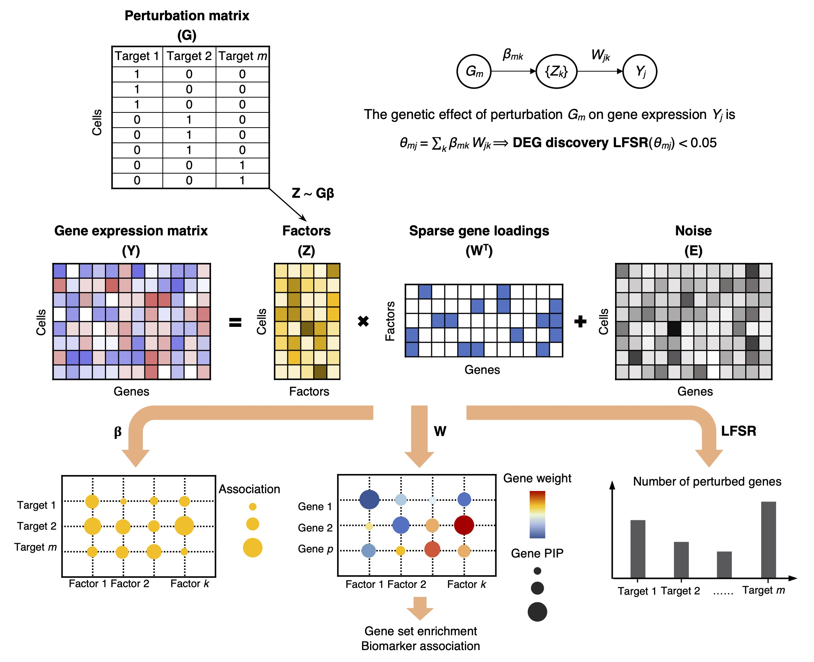

Here you will find links to analysis results in the GSFA project.
A preprint of the project is available on biorxiv.
Technologies such as CROP-seq and Perturb-seq that combine multiplexed CRISPR screening with single-cell RNA-seq (scRNA-seq) have enabled efficient readouts of transcriptome-level effects of multiple genetic perturbations in tens of thousands of individual cells in a single experiment.

Given a matrix \(Y \in \mathbb{R}^{N \times P}\) that holds the normalizd expression levels of \(P\) genes in \(N\) samples, and a perturbation matrix \(G \in \mathbb{R}^{N \times M}\) that holds \(M\) types of sample-level perturbation conditions,
\(Y = ZW^T+E\), where \(Z \in \mathbb{R}^{N \times K}\), \(W \in \mathbb{R}^{P \times K}\), \(E_{ij} \sim N(0,\psi_j)\),
\(Z = G \beta + \Phi\), where \(\beta \in \mathbb{R}^{M \times K}\), \(\Phi_{ik} \overset{i.i.d.}{\sim} N(0,1)\).
Both \(W\) and \(\beta\) have sparse priors imposed.
Gibbs sampling is used to infer the model parameters from data.
The total effect (\(\theta_{mj}\)) of a target perturbation \(m\) on individual gene \(j\) is simply the product of the perturbation-to-factor effect and the gene-on-factor loading, summing over all \(K\) factors. The significance of this total effect is evaluated using local false sign rate (LFSR), which is similar to local false discovery rate (LFDR).
GSFA produces three main outputs: 1) the association between genetic perturbations and factors; 2) the weights of genes on factors measured by PIPs; 3) a list of DEGs of each perturbation at a given LFSR cutoff.